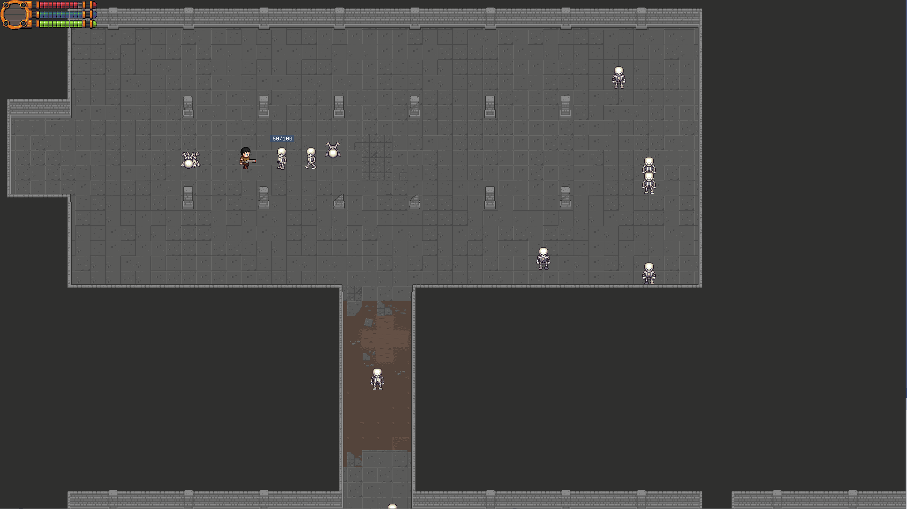
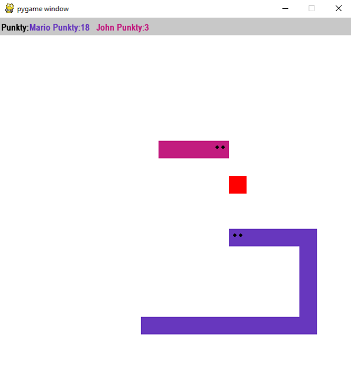

Lion's Den
2D Hack'n Slash Game

Podstawowym celem niniejszego projektu było stworzenie stosunkowo prostej gry wykorzystującej silnik graficzny 2D i oparty na izometrycznym widoku kamery w stylu klasycznych gier Hack&Slash. Został on zainicjowany w oparciu o kod silnika open source BoldTemple Engine, który stanowi hobbystyczny projekt opublikowany w jednym z publicznych repozytoriów GitHuba. Silnik ten został wybrany ze względu na jego niszowość, nietypową architekturę i konieczność dalszego rozwoju w toku realizacji projektu. Wybór innego, popularnego silnika takiego jak Unity czy Unreal Engine byłby znacznie prostszy, łatwiejszy w implementacji oraz szybszy w kontekście prac programistycznych, jednak już nie tak rozwijający. Tym samym silnik BoldTemple oferował znacznie większe wyzwanie przy jednoczesnych dużych możliwościach rozwoju, zarówno samego projektu jak i umiejętności programistycznych.
W trakcie prac projektowych zrealizowane zostały następujące funkcjonalności:
- tworzenie nowej instancji gry
- wczytywanie już istniejących zapisów
- możliwość modyfikacji ogólnych ustawień gry obejmujących rozdzielczość, poziom głośności i rozmiar okna
- menu pomocy z informacjami na temat gry i opcjami sterowania
- interfejs zawierający informacje na temat statusu postaci, który obejmuje takie informacje jak: zdrowie, mana oraz doświadczenie
- okno ekwipunku postaci
- system obsługi rozmieszczenia przedmiotów w ekwipunku
- implementację mapy gry wraz z elementami otoczenia i warstwami
- podstawowy system walki
- animacje walki
- system obsługujący przeciwników i ich zachowanie
- elementy sztucznej inteligencji postaci niezależnych
- generator przedmiotów
- losowe generowanie właściwości przedmiotów
- wdrożenie statystyki bazowej odpowiadającej za redukcję obrażeń
- możliwość uzyskiwania dodatkowych właściwości przedmiotów
- poziomy rzadkości
W projekcie zostały wykorzystane:
- Biblioteka SDL - Biblioteka pozwalająca stworzyć silnik gry
- BoldTempleGame Engine - Framework oparty na SDL służący jako silnik
- DearImGui - Biblioteka do tworzenia interfejsu graficznego
- RapidJson - Parser plików Json używany do wczytywania/zapisywania gry
- Tileson - Parser plików Json używany do wczytywania map tworzonych przy pomocy programu Tiled
Snake Multiplayer

Prosta gra Snake pozwalająca na grę dla dwóch graczy.
Celem gry jest zdobycie jak największej ilości punktów zjadając losowo pojawiające się jabłka. Gra z czasem staje się coraz trudniejsza ponieważ węże graczy rosną przez co jest coraz trudniej manewrować jednocześnie uważając na przeciwnika.
W projekcie zostały wykorzystane:
- PyGame - Biblioteka pozwalająca stworzyć silnik gry
- PodSixNet - Biblioteka obsługująca sieć komputerową do przesyłania pakietów danych między aplikacjami klient-serwer